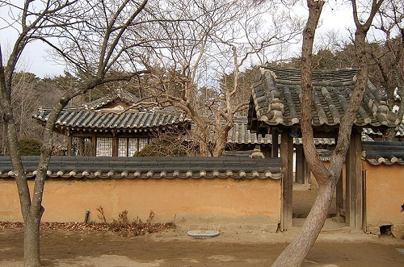

허균
허균(1569년 음력 11월 3일 ~ 1618년 음력 8월 25일)은 조선 중기의 문인으로 학자이자 작가, 정치가, 시인이었다. 서자를 차별 대우하는 사회 제도에 반대하였으며, 작품 <홍길동전> 이 그의 작품으로 판명되면서 널리 알려졌다. 본관은 양천, 자는 단보, 호는 교산 또는 성소, 학산, 성수로 불렸고 후에는 백월거사로도 불렸다.
출생과 가계 배경
허균은 1569년(선조 3년) 음력 11월 3일에 강릉 초당동에서 군수와 동지 중추부사를 지낸 초단의 삼남 삼녀 가운데 말자로 태어났다.
청년기, 초시, 생원시 합격과 임진왜란
일찍 부친을 여의었으나 20세 이상 나이 차이가 나는 이복 형 허성의 집과, 강릉의 외가를 오가며 풍족하지는 않았으나 어렵지 않은 소년기를 보냈다. 그의 나이 17세 때인 1585(선조 18년) 초시에 급제하고 안동김씨 김대섭의 차녀와 결혼을 한다.